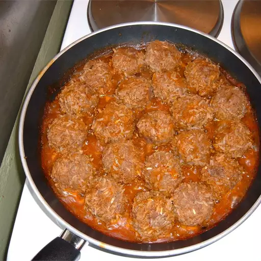

Porcupine meatballs

Description
Simple and delicious. Beef meatballs with rice, simmered in tomato soup. Great for a fast meal on a busy schedule.
Ingredients
- 1 (10.75 ounce) can condensed tomato soup
- 1/2 cup water
- 1 pounds ground beef
- 1 cup uncooked instant rice
- 1 tablespoon minced onion
- 1 teaspoon salt
- 1 dash ground black pepper
Steps
- In a medium mixing bowl, combine the tomato soup and the water. Mix thoroughly and set aside.
- In a large mixing bowl, combine the ground beef, instant rice, onion, salt, pepper and 1/2 cup of the soup mixture. Mix thoroughly, and shape into 1 inch balls.
- Place meatballs in a large skillet over medium heat. Pour in the remaining soup mixture and bring to a boil. Simmer for 15 to 20 minutes or until meatballs are thoroughly browned and rice is cooked.
Return to main page